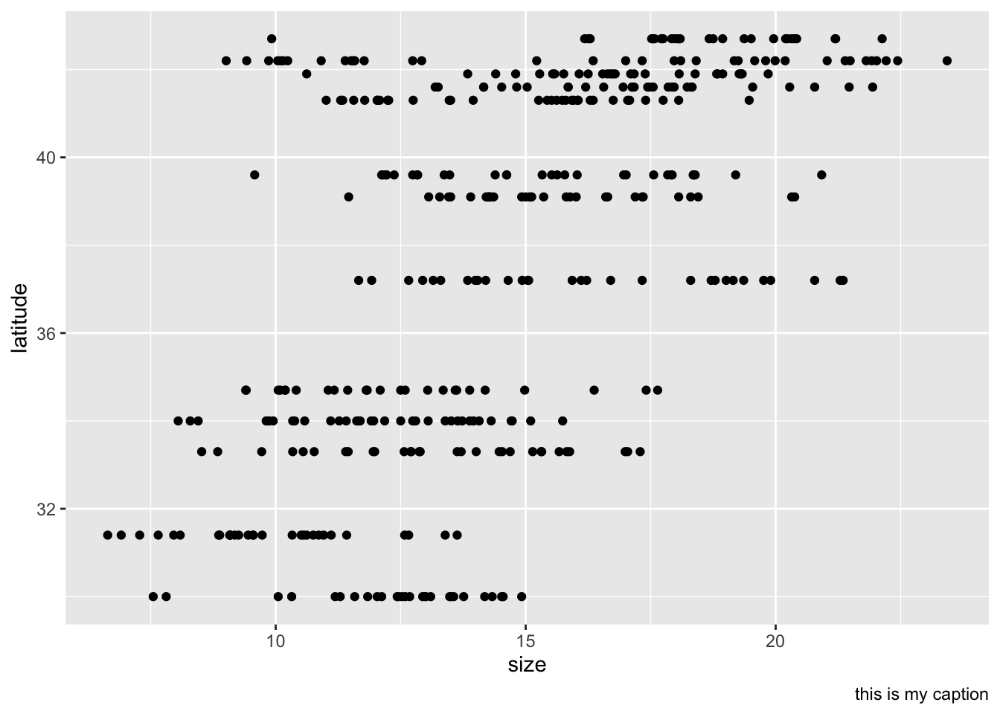

Fiddler Crabs Data Exploration
The graph below looks at the pie_crab data set representing the crabs sizes across latitudes.

The table below looks at the crabs mean, standard deviation, and count by site.
| site | Mean crab width(mm) | SD crab width (mm) | count |
|---|---|---|---|
| BC | 16.20 | 4.814463 | 37 |
| CC | 16.82 | 2.054689 | 27 |
| CT | 14.69 | 2.357521 | 33 |
| DB | 15.60 | 2.119959 | 30 |
| GTM | 12.40 | 1.804449 | 28 |
| JC | 15.27 | 2.722022 | 30 |
| NB | 17.14 | 2.288182 | 29 |
| NIB | 13.29 | 2.419173 | 30 |
| PIE | 18.50 | 2.296058 | 28 |
| RC | 12.49 | 2.344991 | 25 |
| SI | 9.85 | 1.790097 | 30 |
| VCR | 16.34 | 2.938512 | 30 |
| ZI | 12.06 | 2.009251 | 35 |